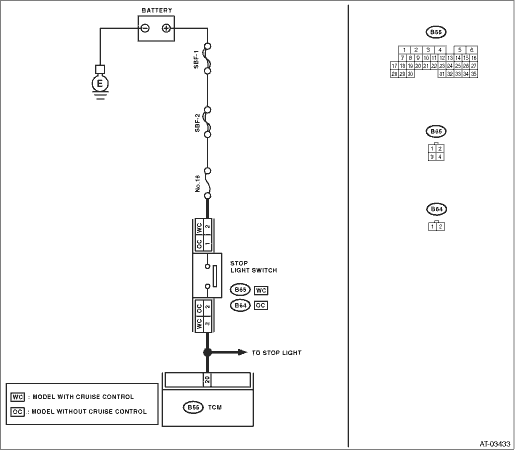

AUTOMATIC TRANSMISSION (DIAGNOSTICS)(4AT)(D) > Diagnostic Procedure with Diagnostic Trouble Code (DTC)
DTC DETECTING CONDITION:
Stop light switch malfunction, open input signal circuit
TROUBLE SYMPTOM:
Gear is not shifted down when climbing a hill.
WIRING DIAGRAM:


1.CHECK FUSE (NO. 16).
Remove the fuse (No. 16).
|
Is the fuse (No. 16) blown out?
|
Replace the fuse (No. 16). If the replaced fuse (No. 16) has blown out easily, repair the short circuit of harness between fuse (No. 16) and stop light switch.
|
|
2.CHECK OPERATION OF BRAKE LIGHT.
Depress the brake pedal.
|
Does the brake light illuminate?
|
|
Check the brake light circuit.
|
3.CHECK INPUT SIGNAL FROM TCM.
1) Depress the brake pedal.
2) Measure the voltage of the harness between TCM and stop light switch.
Connector & terminal
(B55) No. 20 (+) — Chassis ground (−):
|
Is the voltage 10 V or more?
|
|
|
4.CHECK HARNESS CONNECTOR BETWEEN TCM AND STOP LIGHT SWITCH.
1) Turn the ignition switch to OFF.
2) Disconnect the connectors from the TCM and stop light switch.
3) Measure the resistance of harness between the TCM and stop light switch.
Connector & terminal
Models with cruise control
(B55) No. 20 — (B65) No. 3:
Models without cruise control
(B55) No. 20 — (B64) No. 2:
|
Is the resistance less than 1 Ω?
|
|
Repair the open circuit of the harness between the TCM and the stop light switch.
|
5.CHECK HARNESS CONNECTOR BETWEEN TCM AND STOP LIGHT SWITCH.
Measure the resistance of the harness between TCM and chassis ground.
Connector & terminal
Models with cruise control
(B55) No. 20 — Chassis ground:
Models without cruise control
(B55) No. 20 — Chassis ground:
|
Is the resistance 1 MΩ or more?
|
|
Repair the short circuit of the harness between the TCM and the stop light switch.
|
|
|
Is there poor contact in input signal of brake switch?
|
|
Replace the TCM. 
|